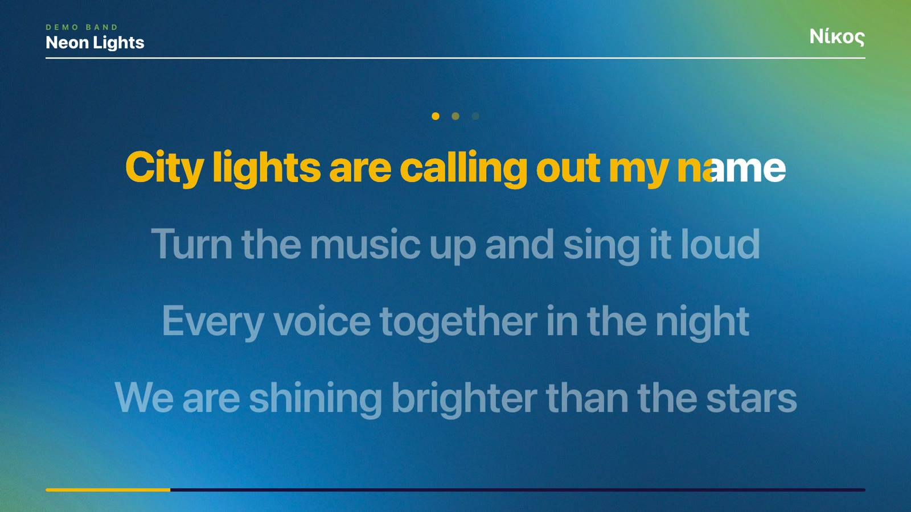

Full Stack Engineer
I build web applications and backend systems end to end, from the interface to the infrastructure. Currently at FlexCar, with a background in distributed systems, APIs and networking. I care about clean architecture, performance and shipping complete products.

A desktop app that runs a live karaoke and music quiz night: synced lyrics on the TV, five party games, a grand final with voting, all controlled in real time from any device.
Read the case study →
FlexCar · Athens
Technor Engineering Ltd · Attiki
Technor Engineering Ltd · Attiki
University of West Attica